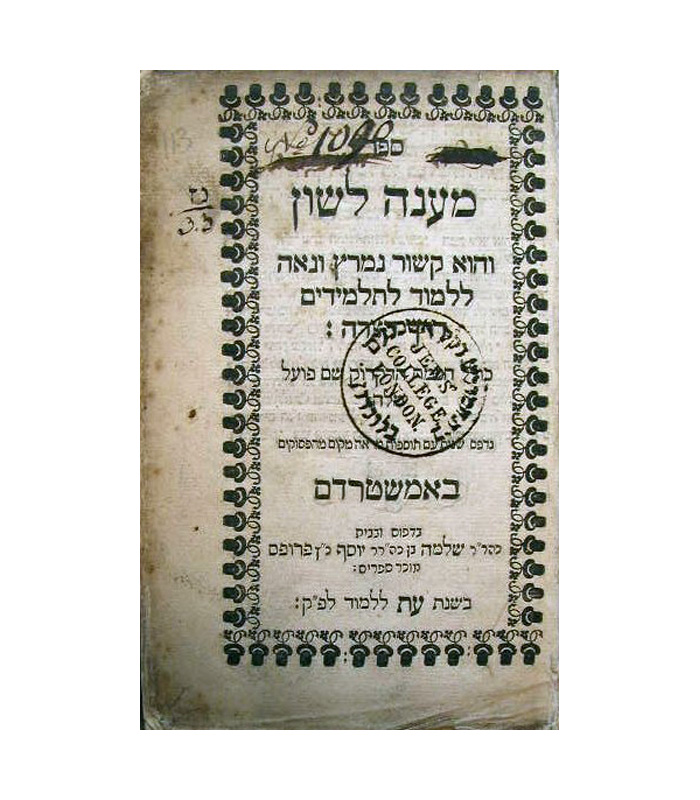
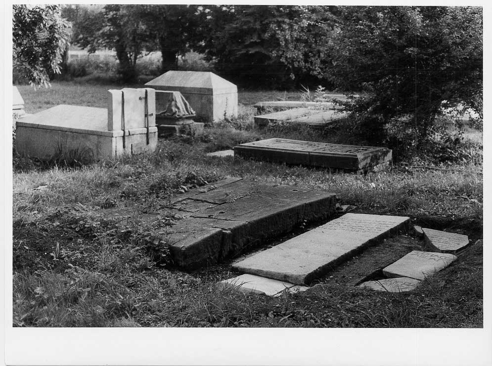
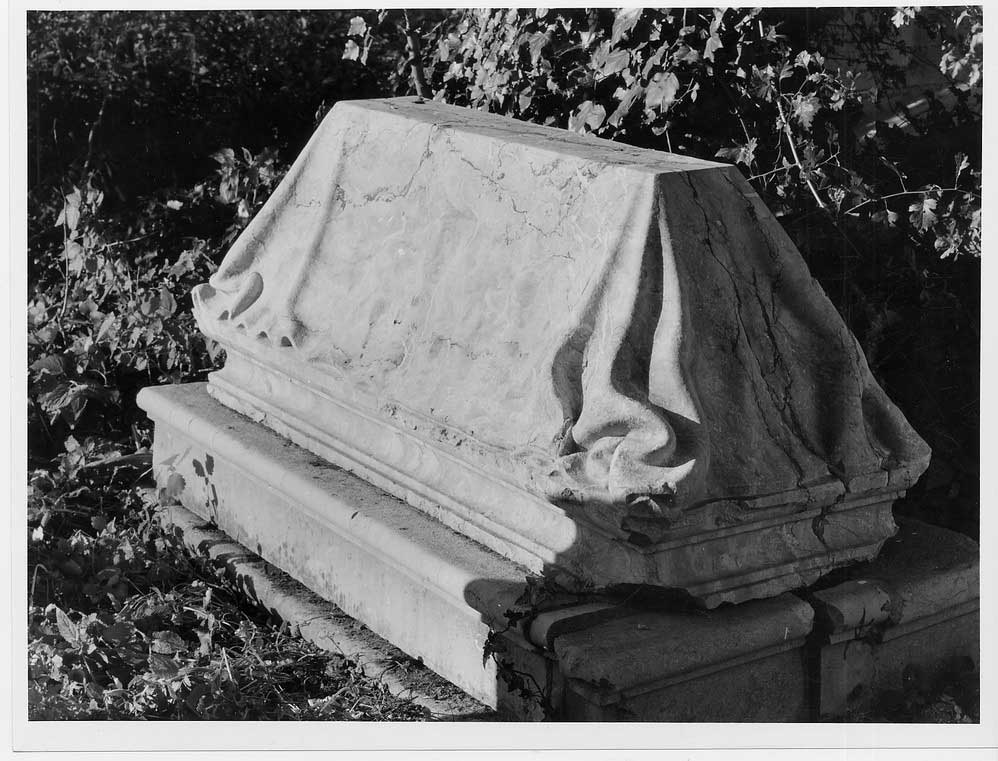

Rav Yitzchak Uziel
1560 - 1622
Biography
Rav Uziel was born in Fez, Morroco. His father was Avraham Uziel, an important figure amongst the Jews of Fez. The parents of Avraham had escaped the inquisition in Castilia. After a famine broke out in Fez, Rav Uziel started wandering and served some time as Rav in Oran, Algeria but when the Beit Yisrael kehilla in Amsterdam invited him, he left for Amsterdam in 1606. There he opened a yeshiva which counted among its talmidim Menashe ben Yisroel and Yitzchak Aboab da Fonseca. Rav Shaul Morteira, who was already a Rav in the kehilla, also learned from him. His favourite talmid was Rav Menashe ben Yisroel( he was the one to succeed Rav Uziel after his petire, despite his young age; he was only eightteen at that time.)
In 1617, when Judah Vega, the first Rav of Neveh Shalom retired, he was appointed Rav of the Neveh Shalom kehila. In his droshes, Rav Uziel questioned the sincerity of some former New Christians reconversion to Judaism and complained about a general lack of religious observance. As a result many of the Marranos left his community and in 1618 established a separate congregation. (At a certain point there were three Sefardic kehilas; Neve Shalom, Beth Ya’akov and Beth Yisrael. Despite the differences, all three kehillos worked together in Tzedoka organizations and to rescue their brethren who were still trapped in Spain. In 1639 the three kehilos were reunited).
Major Works
He wrote a sefer on Hebrew grammar, Ma’aneh Lashon, edited by his talmid Yitzchak Nehemiah and printed in the printing house of his talmid Menashe ben Yisroel. (Amsterdam 1627). He also left in manuscript many Hebrew and Spanish poems which have real literary value, but only a few were published, some of them in machzorim from North Africa.

Visiting the Kever
Rav Uziel was buried in Beth Haim, Ouderkerk aan de Amstel.
His kever is covered with a cloth of red marble.

